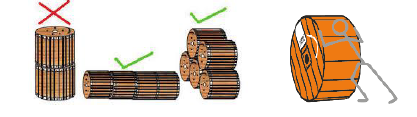
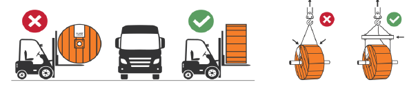

Kabel-kanalizasiya qurğuları
Kanal tikintisi üçün xəndək qazıntısı və boruların döşənməsi
-
Əl və mexanizmlərlə qazılan xəndəklərin eni döşənəcək boru sayına görə müəyyən edilməlidir;
-
Boruların rabitə quyularına giriş hissələrinin dərinliyi səkilərdə ən azı 0,7 metr, avtomobil yollarında isə 0,8 metrdən aşağıda olmalıdır;
| Boruların ölçüsü | Borular basdırılan ərazi | 1 kanal | 2 kanal | 3 kanal | 4 kanal |
| Xəndəyin dərinliyi (m) | |||||
| 100 mm-lik boru(polietilen, polivinilxlorid, metal) | səki | 0,52 | 0,52 | 0,66 | 0,66 |
| avtomobil yolu | 0,72 | 0,72 | 0,86 | 0,86 | |
| dəmir yolu | 1,22 | 1,22 | 1,50 | 1,50 | |
| 40-50 mm-lik boru (polietilen,polivinilxlorid, metal) | səki | 0,40 | 0,40 | - | - |
| avtomobil yolu | 0,50 | 0,50 | - | - | |
Rabitə kabel xətlərinin digər yeraltı, yerüstü qurğularından minimal məsafəsi Azərbaycan
Respublikası Nazirlər Kabinetinin 15.12.2005-ci il tarixli, 227 saylı «Telekommunikasiya şəbəkələrini,
vasitə və qurğularını mühafizə Qaydaları» haqqında qərarına əsaslanmalıdır (Əlavə 6)
-
Sərt qayalı sahələrdə (qayanın üzdə olduğu sahələrdə) rabitə kanallarının tikintisi üçün qazılmış xəndəyin dərinliyi 0,40 metr təşkil etməlidir;
-
Kanal tikintisi zamanı aşırımın ortasından quyular istiqamətində maililik tətbiq edilməlidir;

-
Kifayət qədər təbii yamaclı ərazilərdə boru bütün uzunluğu boyu eyni səviyyədə basdırıla bilər və yalnız quyulara giriş hissələrinə maillik tətbiq etmək olar;

-
Kifayət qədər yamac olmayan ərazilərdə borunun bir tərəfi ən yüksək, o biri tərəfi isə ən aşağı səviyyədə qoyularaq basdırıla bilər;

-
Quyulararası aşırımlarda kanal tikintisi işlərinin icrası bitdikdən sonra boruların bütün ucları qapadılmalıdır. Həmçinin kanal tikintisinin icrasında işlərin müvəqqəti
dayandırılması hallarında xəndəyə döşənmiş borular müvəqqəti olaraq qapadılmalıdır; -
Bir neçə sıradan ibarət boruların kanallara döşənməsi zamanı hər bir sonrakı və ondan əvvəlki sıraların arasına 50 mm qalınlığında ələnmiş torpaq və ya qum səpilməlidir.
Eyni zamanda polietilen boruların mərkəzi oxları növbəti sıraya alternativ olaraq boruların arasındakı məsafənin yarısı qədər sağda və solda yerləşdirilməlidir;
-
Xəndəyə döşənmiş boruların alt və üst hissələrinə 50 mm hündürlüyündə qum qatından yastıq səpilməlidir. Xəndəkdən çıxarılmış torpağın tərkibində 20 mm-dən böyük
ölçülü daşlar olmazsa, borunun üstü xəndəkdən çıxarılan torpaqla örtülərək sıxlaşdırıla bilər.
-
Xəndəyə döşənmiş boruların üstünün örtülməsindən öncə, boru kəməri sifarişçi və texniki nəzarət nümayəndəsinin iştirakı ilə iş icraçısı tərəfindən yoxlanılmalı, onun texniki
şərtlərə uyğun olması dəqiqləşdirilməli və üstü örtülən işlərə dair akt tərtib edilməlidir (əlavə 2); -
Yeni kanal tikintisi zamanı basdırılmış boruların kipləşdirilməsi ayaqla, çəkisi 15 kq az olmayan əl aləti vasitəsilə edilməlidir. Borunun üstündə kipləşdirilmə işləri torpaq qatının hündürlüyü minimum 0,3 metrə çatdıqdan sonra edilməlidir;
-
Kabel kanalizasiya qurğularının tikilməsində 100 mm-lik borudan istifadə edilməlidir.
-
Optik kabelin keçirilməsi üçün quyudan divara, quyudan dirəyə, dirəkdən divara və dirəkdən dirəyə (yüksək gərginlikli elektrik xətləri ilə kəsişərsə), kabel sayını nəzərə almaq şərti ilə (maksimum 3 kabel sayı) 40-50 mm-lik polietilen borulardan yeraltı keçidlərin tikilməsinə icazə verilir. Yeraltı keçidlərin tikilməsi zamanı polietilen boruların qatlanmasına və calaq olunmasına icazə verilmir;
-
Müəyyən səbəblərdən yol keçidlərində tikilən kanalların dərinliyi kifayət qədər olmazsa, nəqliyyat vasitələrindən yaranan yükü bərabər yaymaq üçün kanalın üzərinə qum yastığı verilməli və qazılmış xəndək enində 180 mm qalınlığında beton təbəqə hazırlanmalıdır;
-
Bataqlıq və yüksək səviyyəli qrunt sularının olduğu yerlərdə quyular arası aşırımlarda yerləşdirilən borular qum kisələri və ya beton novlarla basdırılmalıdır;
-
Eni 6 metrəyə qədər olan su kanalı üzərindən 100 mm-lik metal borularla keçmək mümkündür. Kanalın uzunluğu su kanalının enindən hər iki tərəfə 3 metr təşkil etməlidir. Metal boru su kanalının beton divarından açılan dəliklərdən keçirilərsə dağıdılmış hissələr bərpa olunmalıdır. Metal borular antipasla boyanmalıdır.

-
Kanal tikintisinin marşrutu üzərində eni 6 metrəyə qədər olan dərə (kanyon) olarsa, 100 mm-lik metal borularla keçimək olar. Kanalın uzunluğu çökəkliyin enindən hər iki tərəfə 3 metr təşkil etməlidir. Metal borular antipasla boyanmalıdır;
-
Torpağın münbit qatı yerinə qaytarılaraq iş tamamlanmalıdır. Asfalt və qazon sahələrdə dağıdılmış hissələr bərpa edilməlidir;
-
Sonda tullantılar ərazidən çıxarılmalıdır;
-
İşləri icra edərkən işçi heyəti fərdi mühafizə vasitələri ilə təmin edilməlidir. Bütün risklər nəzərə alındıqdan sonra işə başlanılmalıdır. Qazıntı işləri aparılan sahə təhlükəsizlik lenti ilə əhatə edilməli, müvafiq xəbərdaredici nişanlarla təchiz edilməlidir.
Yol və yolkənarı ərazilərdə işləyən işçilər reflektorlu gödəkçə ilə təmin olunmalıdırlar.
Çala qazıntısı və rabitə quyularının quraşdırılmasi
-
Qazıntı ən azı 4 nəfərlik təcrübəli briqada və ya azı 0,25 m3 kovuşu olan ekskavatorla aparılmalıdır;
-
Quyunu quraşdırmazdan əvvəl çala dibinin hamarlığı yoxlanılmalıdır. Quyu dəst (alt və üst) şəkildə quraşdırılmazsa, quyu (tək üst hissə) ölçülərinə uyğun çala dibinə beton qarışığından 60 mm qalınlığında döşəmə hazırlanmalıdır;
-
Quraşdırılacaq quyunun xarici hissələri hidroizolyasiya olunmalıdır;
-
Dəmir-beton quyuların boşaldılması və çalaya quraşdırılması yük qaldırıcı krandan istifadə etməklə həyata keçirilməlidir. Quyu dəstinin alt və üstünün birləşmə hissələrinin düzgünlüyü yoxlanılmalı, sement-qum məhlulu ilə örtülməlidir;
-
Quyularda boruların giriş hissələrinin ətrafında boşluqlar sement-qum məhlulu qapadılmalıdır;
-
Sement-qum qarışığı vasitəsilə quyu boğazlığı quyu üzərinə quraşdırılmalı və qapaqla bağlanılmalıdır. Quyu boğazlığı yer səthinin hündürlüyü səviyyəsinə uyğun nizamlanmalıdır;
-
Yeni quraşdırılmış quyuların daxilinə kabel sayına uyğun olaraq konsol və kranşteyn bərkidilməlidir;
-
Quyuların texniki göstəriciləri aşağıdakı cədvələ uyğun olmalıdır;
-
Kanalların sayına görə quyuların bölgüsü aşağıdakı cədvələ uyğun hesablanmalıdır;
| quyunun tipi | yük götürmə qabiliyyəti (minimum) (ton) |
uzunluğu (mm) | eni (mm) | eni (mm) | |
| səki | avtomagistral | ||||
| kkq-1 | 10 | 80 | 760 | 760 | 800 |
| kkq-2 | 10 | 80 | 1360 | 1060 | 1570 |
| kkq-3 | 10 | 80 | 1950 | 1160 | 1770 |
| kkq-4 | - | 80 | 2380 | 1320 | 2000 |
| kkq-5 | - | 80 | 3000 | 1650 | 2040 |
-
Kanalların sayına görə quyuların bölgüsü aşağıdakı cədvələ uyğun hesablanmalıdır;
| quyunun tipi | daxil olan kanal sayı |
| kkq-1 və daha kiçik quyular | 1 kanal |
| kkq-2 | 2 kanal |
| kkq-3 | 3-6 kanal |
| kkq-4 | 7-12 kanal |
| kkq-5 | 13-24 kanal |
| kkqx-1 (xüsusi) | 25-36 kanal |
| kkqx-2 (xüsusi) | 37-48 kanal |
-
Xüsusi quyular 36 və 48-ə qədər olan kanalların sayı ilə qurulur. Daxil edilmiş kanalların sayı təyin edilmiş həddi aşarsa, fərdi dizayn üzrə qeyri-tipik quyulardan istifadə olunur;
-
Quyular düz xətt üzrə bir-birindən 60-120 metr məsafədə quraşdırılmalıdır. İstisna hallarda bu məsafə 150 metrə qədər artırıla bilər;
-
V qrup torpaq sahələrində (bərk və qayalı sahələr) KKQ tipli quyuların dəst şəkildə deyil, təkcə üst hissələrinin quraşdırılmasına icazə verilir.
-
Kərpic və ya mişar daşı ilə tikilmiş kiçik quyunun (600x600x500 mm) və ya KKQ-1 tipli quyunun daxili və xarici hissələri suvanmalıdır. Həmçinin tikilmiş quyunun xarici divarları hidroizolyasiya edilməlidir. Kərpic və ya mişar daşı ilə tikilmiş quyuların üzərinə səki hissədə 150 mm, magistral yol hissələrində isə 180-200 mm qalınliğı olan (gücləndirilmiş) dəmir-beton örtükləri qoyulmalıdır;
-
Səkilərdə tikilən 600x600x500 ölçülü quyularını 400x400x400 mm ölçülü, davamlılığı 4,8 kq/sm2 –dan az olmayan yeraltı plastik qutularla (YPQ) əvəz edilərək quraşdırılmasına icazə verilir. Plastik qutularının avtomobil nəqliyyatı vasitələrinin hərəkəti olan yollarda quraşdırılması qadağandır;
-
İşləri icra edərkən işçi heyəti fərdi mühafizə vasitələri ilə təmin edilməlidir. Bütün risklər nəzərə alındıqdan sonra işə başlanılmalıdır. Kənar şəxslərin iş sahəsinə daxil olaraq təhlükəyə məruz qalmaması məqsədi ilə ərazi təhlükəsizlik lentləri ilə əhatə olunmalı, müvafiq xəbərdaredici nişanlar qoyulmalıdır. Yol və yolkənarı ərazilərdə işləyən işçilər reflektorlu gödəkçə ilə təmin olunmalıdırlar;
-
Avtomobil yollarında qazılmış çalalardan azı 10-15 metr məsafədə xəbərdarlıq nişanları quraşdırılmalıdır. Zəif görüntülü hava şəraitində əlavə işıq siqnalları quraşdırılmalıdır;
-
Qazılan dərinliyə və torpaq süxurlarının növünə uyğun torpaq sürüşməsinin qarşısını almaq üçün tədbirlər görülməlidir.
Kabel-kanalazasiya qurğuları ilə optik kabelin çəkilməsi
-
Marşrut müəyyənləşdirilərkən kabel-kanalizasiya qurğularının (layihə və ya eskiz hazırlanan zaman) mövcud vəziyyəti yoxlanılmalıdır;
-
Mövcud qüsurlar aradan qaldırıldıqdan sonra layihənin icrasına başlanıla bilər. Mübahisəli hallar sifarişçi ilə razılaşdırılmalıdır;
-
İş sahəsinə gətirilən optik kabelin barabanı şaquli vəziyyətdə saxlanılmalıdır. Kabel barabanın yuvarlanması yalnız barabanın üzərində göstərilən ox işarəsi istiqamətində olunmalıdır;
 -
Kabelin nəqliyyat vasitəsindən boşaldılması yükləyici və ya qaldırıcı mexanizmlər vasitəsi ilə həyata keçirilməlidir. Kabelin mexanizm vasitələri ilə boşaldılması mümkün olmadığı halda onları köməkçi keçid vasitələri və stroplarla düşürdülməsinə icazə verilir. Barabanın əl ilə yuvarlayaraq boşaldılmasına, anbar və nəqliyyat vasitəsinin döşəmələrinin bir səviyyədə olduğu halda icazə verilir. Kabelli barabanı nəqliyyat vasitəsindən yerə atılması qəti qadağan olunur;
 -
Barabandan açılmazdan öncə kabelin bütövlüyü və zədəsiz olması reflektometr cihazı vasitəsilə ilə ölçülməlidir;
-
Marşrutun maneə olan hissələrində və ya kabelin tikinti uzunluğu böyük olduqda onun çəkilişi təxminən uzunluğunun 1\3 hissəsində yerləşən keçid quyularının birindən iki istiqamətində aparılmalıdır. Əvvəlcə kabel bir istiqamətdə uzun məsafəyə çəkilməli, qalan kabel arabadan açılmalı, dairə şəkilində quyunun yanında sərilməli və o biri istiqamətə çəkilməlidir. Kabeli marşrut boyunca böyük dairələr şəkilində sərərək çəkmək olar. Kabelin sərt şəkildə qatlanmamasına xüsusi diqqət yetirilməlidir;
-
Kabel barabandan araba, qoşqu və ya digər xüsusi avadanlıqlar üzərində açılmalıdır;
-
Mexanizmlə dartılan kabelin orta sürəti dəqiqədə 5-7 metr olmalıdır. Əl ilə kabelin dartılması bərabər şəkildə, təkansız icra edilməlidir;
-
Kabelin dartılması zamanı quyunun daxilində mövcud kabellərin, optik qolçaqların üzərində dayanmaq olmaz;
-
Optik kabelin kütləsi 0,3 kq / m-dən az olduqda, onu bir başa olaraq hazırlıq çubuğu ilə birgə kanaldan çəkilməsinə icazə verilir;
-
Optik kabelin öz oxu ətrafında burulması 4 m uzunluğunda 360 ° -dən çox olmamalıdır;
-
Kabel barabanı quyunun ətrafında elə yerləşdirilməlidir ki, kabel barabanın üst hissəsindən ötürülsün;
-
Əgər borularının birləşmələrində yerdəyişmə (əzilmə,sınma) aşkarlanarsa icra prosesi dayandırılmalı, birləşmələr bərpa olunduqdan sonra işin icrası bərpa edilməlidir. Birləşmələrin bərpası boru növünə və ölçüsünə uyğun olaraq xüsusi təmir manjetləri vasitəsilə aparılmalıdır;
-
Kabelin mövcud kanallarda çətin keçən aşırımlarında kabellə yanaşı məftilin keçirilərək saxlanılması məqsədəuyğundur;
-
Elektrik kabellərinin mövcud olduğu kollektorlarda optik kabel polietilen boru ilə müdafiə olunaraq çəkilməlidir. Bir kanalda elektrik və optik kabellərin çəkilməsi qadağandır;
-
Son və ya ilk quyuda saxlanılmış (öncədən nəzərdə tutulmalıdır) ehtiyat kabeldən istifadə etməklə aşırımın ortalarından başlayaraq hər iki istiqamətdən optik kabel çəkilərək quyunun formasına uyğun olaraq konsol yuvasına yerləşdirilərək bərkidilməlidir.
-
Rabitə quyularında paylayıcı avadanlıqlar (qolçaq, optik paylayıcı şkaf (OPŞ) və s.) üçün saxlanılan kabelin ehtiyatı 12 metr təşkil etməlidir. Birləşmədən sonra kabelin ehtiyatı diametri 600 mm təşkil edən dairə formasında yığılmalı və konsola bərkidilməlidir;
-
Optik kabellərin çəkilişi zamanı havanın hərarəti -10 dərəcədən aşağı olmamalıdır. Əks halda kabel çəkilişi işlərinin icrası dayandırılmalıdır;
-
Əhalinin sıx olan sahələrində, avtomobil yollarında kabellərin yerə sərilməsi prosesində onların zədələnməsi və sıxılmasının qarşısını almaq məqsədilə əlavə tədbirlər görülməlidir;
-
Kabel-kanalizasiya qurğuları ilə çəkilmiş optik kabelə nömrə nişanı (kabelin nömrə nişanını sifarişçi təyin etməlidir) bərkidilməlidir;
-
İşləri icra edərkən işçi heyəti fərdi mühafizə vasitələri ilə təmin edilməlidir. Bütün risklər nəzərə alındıqdan sonra işə başlanılmalıdır. Yol və yolkənarı ərazilərdə işləyən işçilər reflektorlu gödəkçə ilə təmin olunmalıdır;
-
Qəza və zədələrin qarşısını almaq üçün quyular müvafiq alətlərin (əlvan metaldan hazırlanan) köməyi ilə açılmalıdır. Heç bir halda bel, külüng, çəkic və ya digər qığılcım yarada biləcək vasitələrdən istifadə edilməməlidir;
-
İşçilər quyuya daxil olmazdan əvvəl quyular havalandırılmalıdır. Quyunun daxilində qazın mövcudluğunu müəyyən etmək üçün qaz analizatorundan istifadə etmək lazımdır. Kanalizasiya sistemi qazdan azad olunana qədər heç bir işə başlamaq olmaz.
Qaz aşkar edildikdə dərhal iş icraçısını xəbərdar etmək lazımdır. Ən azı bir kanal (yuxarı kanal) müvəqqəti olaraq açılmalı və 10-15 dəqiqə sonra zərərli qazların olmaması üçün təkrar yoxlanılmalıdır.